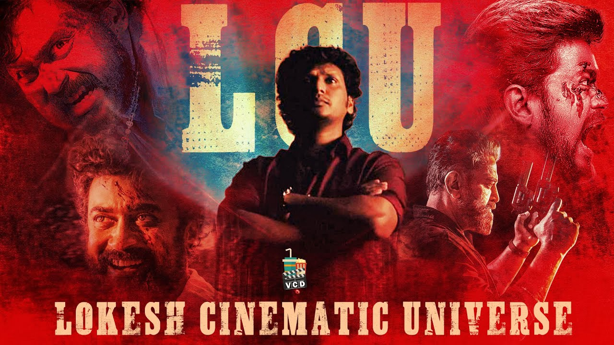
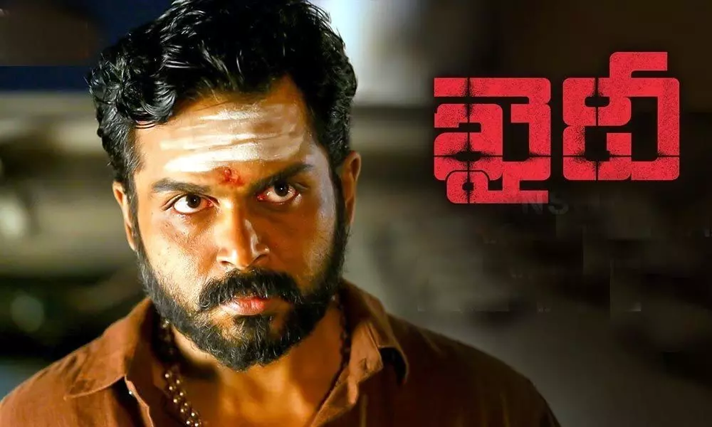
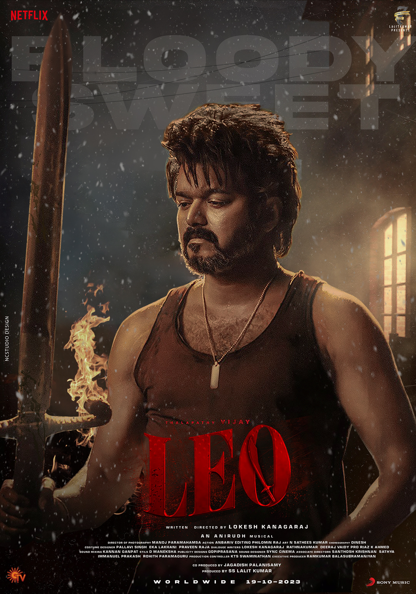

LCU
KAIDHI
Dilli, an ex-convict, endeavours to meet his daughter for the first time after leaving prison. However, his attempts are interrupted due to a drug raid planned by Inspector Bejoy. On a night where the entire police officers got into an immovable situation, a paroled convict is forced to help the police, so that he can see his daughter for the first time in life. How he helps the department forms the story of this action packed entertainer.
VIKRAM
A special investigator discovers a case of serial killings is not what it seems to be, and leading down this path is only going to end in a war between everyone involved.

LEO
Parthiban is a mild-mannered cafe owner who fends off a gang of murderous thugs and gains attention from a drug cartel claiming he was once a part of them.
